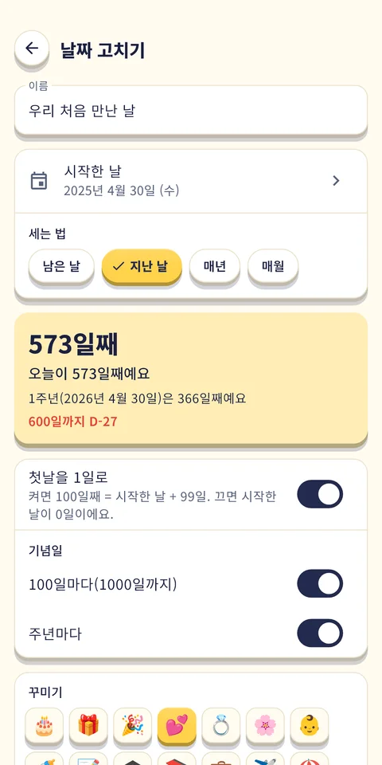
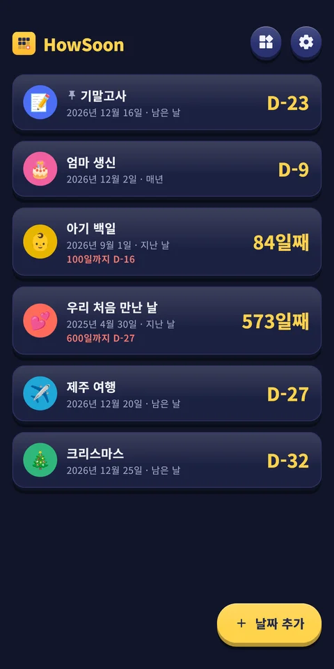
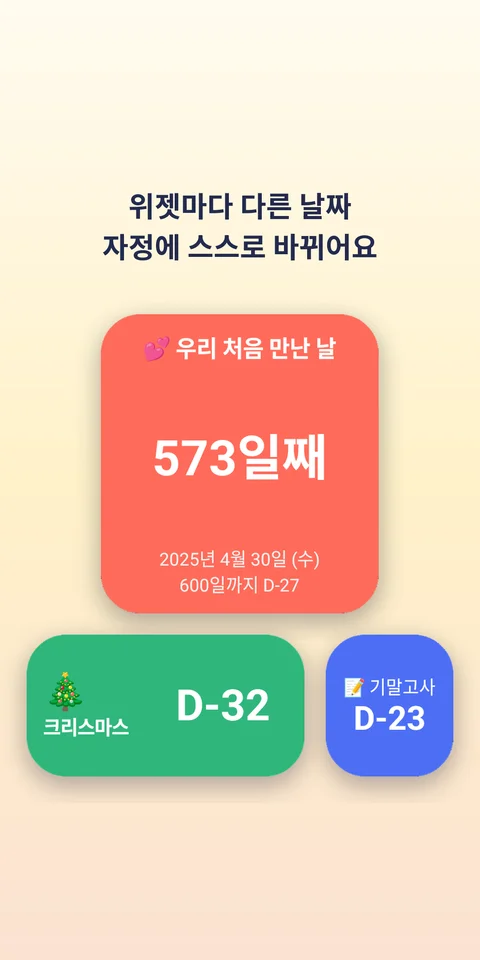

스크린샷







앱 정보
| 앱 이름 | HowSoon |
|---|---|
| 버전 | 1.0.0 |
| 개발 | Willee Project |
| 지원 플랫폼 | Android |
다가오는 날까지 남은 날과 지난날부터 센 날을 세어 홈 화면에 보여 주는 앱입니다. 시험, 생일, 여행, 기념일처럼 기다리거나 기억하고 싶은 날에 씁니다.
- 회원가입도, 로그인도 없습니다. 만든 날짜와 사진은 기기 안에 저장됩니다.
- 인터넷 없이도 쓸 수 있습니다. 인터넷은 앱 아래 광고와 이용 통계·오류 보고를 보낼 때만 씁니다.
- 위젯은 자정에 스스로 바뀌고, 소중한 날에는 알림을 받을 수 있습니다.
- 언어는 기기 설정을 따릅니다. 한국어·영어·일본어·중국어(간체·번체)를 지원하고, 설정에서 직접 고를 수도 있습니다.
- 바뀔 때마다 바로 기기에 저장됩니다(11장).
1. 시작하기
- 앱을 켜면 날짜 목록이 나옵니다. 처음에는 비어 있습니다.
- 아래의 날짜 추가를 눌러 만듭니다(2장).
- 위 막대의 HowSoon 이름 옆에는 위젯 관리 단추(8장)와 설정 단추(10장)가 있습니다.
- 왼쪽 아래의 지운 날짜에서 지운 날짜를 봅니다(6장).
- 목록의 카드마다 날짜 이름과 숫자(남은 날 또는 센 날)가 보입니다. 맨 위에 고정한 날짜가 먼저 나오고, 그다음은 다음 그날이 가까운 순서입니다.
- 카드를 누르면 그 날짜가 열립니다. 큰 숫자, 말로 풀어 쓴 문장, 다가오는 기념일이 보이고, 위 막대에 고치기 단추가 있습니다.
2. 날짜 추가
날짜 추가를 누르면 '무엇을 셀까요?' 아래에서 템플릿을 고릅니다. 알맞은 설정을 미리 채워 주고, 만든 뒤에도 모두 바꿀 수 있습니다.
| 템플릿 | 처음 설정 |
|---|---|
| 생일 | 매년. 당일과 하루 전에 알림 |
| 연인 | 지난 날. 기념일 알림 켬 |
| 시험 | 남은 날. 당일·하루 전·일주일 전에 알림 |
| 여행 | 남은 날. 당일과 하루 전에 알림 |
| 아기 | 지난 날(아기가 태어난 날부터 세는 용도). 기념일 알림 켬 |
| 직접 | 남은 날. 알림 없음 |
그다음 화면을 채웁니다.
| 항목 | 하는 일 |
|---|---|
| 이름 | 날짜의 이름입니다. 예: 시험, 여행 |
| 날짜 또는 시작한 날 | 그날입니다. 지난 날은 세기 시작하는 날입니다 |
| 세는 법 | 남은 날, 지난 날, 매년, 매월 가운데 고릅니다(3장) |
| 첫날을 1일로 | 지난 날에만 있습니다(3장) |
| 기념일 | 지난 날에만 있습니다(4장) |
| 꾸미기 | 이모지, 색, 사진(5장) |
| 알림 | 언제 알릴지 고릅니다(9장) |
| 맨 위에 고정 | 이 날짜를 목록 맨 위에 둡니다 |
- 설정 아래 문장이 이 날짜를 어떻게 세는지 말로 보여 줍니다. 예: '오늘이 100일째예요'.
- 저장을 눌러야 바뀝니다. 지우기는 날짜를 지웁니다(6장).
- 새 판의 HowSoon에서 만든 날짜는 안내 글이 나오고, 앱을 업데이트하기 전에는 바꿀 수 없습니다.
3. 세는 법
| 세는 법 | 보이는 것 |
|---|---|
| 남은 날 | 그날까지 남은 날 수입니다. 그날 당일에는 D-Day로 보이고, 지나면 며칠 지났는지 보입니다 |
| 지난 날 | 시작한 날부터 센 날 수입니다 |
| 매년 | 생일처럼 해마다 돌아오는 다음 그날까지 남은 날 수입니다 |
| 매월 | 달마다 돌아오는 다음 그날까지 남은 날 수입니다 |
- 앱은 'D-0'을 쓰지 않습니다. 당일은 늘 D-Day로 씁니다.
- 어떤 달에 없는 날(2월 29일, 31일)은 그 달의 마지막 날로 칩니다.
1일부터? 0일부터?
지난 날은 첫날을 1일로로 세는 법을 고릅니다.
- 켬: 시작한 날이 1일입니다. 그래서 100일째는 시작한 날 + 99일입니다.
- 끔: 시작한 날이 0일입니다.
날짜를 만들 때 설정 아래 문장이 결과를 말로 보여 줍니다. 예: '오늘이 100일째예요'. 연인·아기 템플릿은 앱이 한국어·일본어일 때는 이 스위치가 켜진 채로, 다른 언어일 때는 꺼진 채로 시작합니다. 고른 값은 날짜마다 저장되므로, 앱 언어를 바꿔도 숫자는 바뀌지 않습니다.
켜 두면 1주년은 366일째입니다. 문장이 이를 말해 줍니다. 예: '1주년(2027-01-31)은 366일째예요'. 1주년이 365일째가 되게 하려면 스위치를 끄세요.
4. 기념일
지난 날에는 기념일 스위치로 챙길 날을 고릅니다.
- 100일마다(1000일까지): 100일, 200일 … 1000일.
- 주년마다: 해마다 돌아오는 주년.
날짜 화면의 다가오는 기념일에 다음 기념일이 나오고, 카드에는 다음 기념일까지 며칠 남았는지 보입니다('100일까지 D-12'). 당일에는 축하 연출이 나오고(10장) 알림도 받을 수 있습니다(9장).
5. 꾸미기와 고정
- 이모지와 색: 목록에서 고릅니다. 색은 카드, 날짜 화면, 위젯에 쓰입니다.
- 사진: 사진 넣기를 누르면 Android의 사진 고르기가 열립니다. 사진 한 장을 고르세요. 앱은 줄인 사본(긴 변 1080픽셀 이하, 위치 정보 없음)을 저장하고, 날짜 화면과 큰 위젯의 바탕으로 씁니다. 사진 바꾸기와 사진 빼기도 같은 곳에 있습니다. 사진은 모두 합쳐 18MB까지입니다. 가득 차면 다른 날짜의 사진을 먼저 빼 주세요.
- 맨 위에 고정: 날짜를 목록 맨 위에 둡니다.
6. 지우기와 되살리기
- 지우기는 고치기 화면에 있습니다. 지우면 '지웠어요.'와 되돌리기가 잠시 나옵니다.
- 지운 날짜는 30일 동안 남습니다. 목록 왼쪽 아래의 지운 날짜 (N)로 엽니다.
- 되살리기: 날짜를 되돌립니다.
- 완전히 지우기: 날짜 하나를 바로 지웁니다(먼저 확인 창이 뜹니다). 되살릴 수 없습니다.
- 맨 아래 지운 날짜 비우기: 모두 바로 지웁니다(먼저 확인 창이 뜹니다).
- 30일이 지나면 앱을 켤 때 지웁니다.
- 지운 날짜를 보이던 위젯에는 '지운 날짜예요 · 눌러서 고르기'가 보입니다. 날짜를 되살리면 위젯에 다시 보입니다.
7. 위젯과 갱신
크기는 셋이고, 원하는 만큼 놓을 수 있으며, 위젯마다 날짜를 따로 고릅니다.
| 크기 | 보이는 것 |
|---|---|
| 1×1 · 숫자 | 숫자 |
| 2×1 · 이름과 숫자 | 이름과 숫자 |
| 2×2 · 사진, 이름과 숫자 | 사진, 이름, 숫자, 날짜, 다음 기념일 |
위젯은 자정에 스스로 바뀌므로 아침에 일어나면 숫자가 맞습니다. 앱을 열 필요가 없습니다. 위젯을 누르면 앱에서 그 날짜가 열립니다.
8. 위젯 놓기와 바꾸기
놓는 길 셋
- 홈 화면의 위젯 목록에서: 홈 화면 빈 곳을 길게 누르고 위젯에서 HowSoon을 찾아 원하는 크기를 끌어다 놓습니다. 위젯에 보일 날짜 화면이 열립니다. 날짜를 고르고, 꾸밈을 정한 뒤 완료를 누릅니다. 날짜가 아직 없으면 앱에서 날짜 만들기를 누르세요. 취소는 그만둡니다.
- 날짜 화면에서: 날짜 화면의 홈 화면에 추가를 누르고 위젯 크기를 고르면, 그 날짜를 보여 주는 위젯이 놓입니다. 홈 화면이 앱에서 놓기를 지원하지 않으면 안내가 나오니, 위의 위젯 목록으로 놓으세요.
- 위젯 관리에서: 목록 위 막대의 위젯 관리 단추 → 위젯 추가. 어느 날짜를 보일까요?(또는 새 날짜 만들기)를 고른 뒤 크기를 고릅니다.
꾸밈
위젯에 보일 날짜 화면에서 다음도 정합니다.
| 항목 | 하는 일 |
|---|---|
| 바탕 | 날짜 색, 밝게, 어둡게, 기기 설정(기기의 밝은·어두운 모드를 따름) |
| 바탕 진하기 | 바탕이 얼마나 짙은지 |
| 글자 크기 | 작게, 보통, 크게 |
나중에 바꾸기
- 홈 화면에서 위젯을 길게 눌러 설정을 고릅니다(단추 이름은 기기마다 다릅니다. 예: 설정). 같은 화면이 열립니다.
- 또는 위젯 관리를 열고 위젯을 누릅니다. 놓인 위젯이 날짜와 크기와 함께 나옵니다.
지우기
위젯을 지우려면 홈 화면에서 위젯을 길게 눌러 지웁니다. 앱은 위젯을 지울 수 없습니다. 위젯 관리 화면에도 그렇게 적혀 있습니다.
9. 알림
날짜의 알림에서 언제 알릴지 고릅니다.
- 당일, 하루 전, 일주일 전(남은 날, 매년, 매월)
- 기념일 당일(지난 날)
알림은 알림 시각(기본 오전 9:00)에 옵니다. 설정 → 일반 → 알림 시각에서 바꿉니다.
- 알림을 켠 날짜를 처음 저장하면 Android가 HowSoon이 알림을 보여도 되는지 묻습니다. 허용하지 않았거나 나중에 알림이 꺼지면, 앱에 'HowSoon 알림이 꺼져 있어요.'와 설정 열기가 보입니다.
- 알림에는 날짜 이름과 남은 날 또는 어떤 기념일인지가 나옵니다. 누르면 그 날짜가 열립니다.
- 알림은 앱이 기기 안에서 만듭니다. 알림에는 광고가 없습니다.
위젯과 알림이 늦을 때
앱은 '정확한 알람' 권한을 쓰지 않으므로 정확한 시각은 Android가 정합니다.
- 보통 위젯과 알림은 제 시각에서 몇 분 안에 옵니다.
- 기기가 깊이 잠들어 있으면 최대 1시간쯤 늦을 수 있습니다. 화면을 켜면 곧 따라옵니다.
- 기기의 배터리 절약 설정이 HowSoon을 제한하면 더 자주 늦을 수 있습니다. 위젯 관리에 'HowSoon의 배터리 사용이 제한돼 있어 위젯이 늦게 바뀔 수 있어요.'가 보입니다. 기기의 배터리 절약 설정을 확인해 주세요.
- 앱을 강제 종료하면(예: Android 앱 설정에서) Android가 예약된 갱신을 모두 취소합니다. 앱을 한 번 열면 위젯과 알림이 다시 움직입니다.
10. 설정과 축하
목록 위 막대의 설정 단추로 엽니다. 묶음은 둘입니다.
소리와 효과
| 항목 | 하는 일 |
|---|---|
| 효과음 | 소리를 켜고 끕니다 |
| 진동 | 진동을 켜고 끕니다 |
| 효과 줄이기 | 축하 연출의 움직임을 꺼요 |
날짜의 당일이나 기념일에 앱을 열면 그날 그 날짜의 작은 축하 연출이 한 번 나옵니다. 효과 줄이기를 켜면 움직임이 없고, 효과음이 켜져 있으면 소리만 납니다.
일반
| 항목 | 하는 일 |
|---|---|
| 위젯 관리 | 위 막대 단추와 같은 목록입니다(8장) |
| 알림 시각 | 알림이 오는 시각입니다. 기본은 오전 9:00 |
| 내보내기 | 날짜와 사진을 파일 하나로 저장합니다(11장) |
| 가져오기 | 내보낸 파일의 날짜를 합칩니다(11장) |
| 이전 사본으로 되돌리기 | 자동으로 남긴 사본으로 돌아갑니다(11장) |
| 언어 | 기기 언어(기본)를 따르거나 목록에서 고릅니다(English · 日本語 · 한국어 · 简体中文 · 繁體中文) |
| 개인정보 보호 옵션 | 광고 동의 창을 다시 엽니다. 동의가 필요한 지역(유럽 등)에서만 보입니다 |
| 앱 정보 | 버전, 이 설명서(사용법), 스토어에서 평가하기, 개인정보처리방침, 오픈소스 라이선스, 다른 앱(누르면 스토어가 열립니다)과 모든 앱 보기 |
화면 색은 기기의 어두운 모드를 따릅니다. 앱 안에 따로 스위치는 없습니다.
11. 내보내기·가져오기, 사본, 광고
내보내기
설정 → 일반 → 내보내기는 날짜와 사진을 HowSoon-2026-01-31.json 같은 이름의 파일 하나로 만듭니다. 공유를 고르면 고른 앱으로 보내고, 기기에 저장을 고르면 폴더에 저장합니다. 저장하면 '저장했어요.'가 보입니다. 파일은 개발자에게 보내지 않지만, 받는 사람은 날짜를 읽고 사진을 볼 수 있으니 보내기 전에 확인해 주세요.
가져오기
설정 → 일반 → 가져오기: 내보낸 파일을 고릅니다. 앱이 날짜와 사진이 몇 개 들었는지 보여 줍니다('… 같은 날짜는 더 나중에 고친 쪽을 남겨요.'). 확인하면 날짜가 지금 날짜에 합쳐집니다. 새 날짜는 더해지고, 양쪽에 있는 날짜는 더 나중에 고친 쪽이 남습니다. 18MB에 들어가지 않는 사진은 빼고 가져오며 앱이 알려 줍니다. 새 판에서 내보낸 파일은 HowSoon을 먼저 업데이트하라고 하고, HowSoon의 파일이 아니면 가져오지 않습니다.
이전 사본으로 되돌리기
앱은 하루에 한 번 날짜의 사본을 남기며, 최근 3일 치를 둡니다. 가져오기와 되돌리기 바로 앞에도 사본을 남깁니다.
- 설정 → 일반 → 이전 사본으로 되돌리기에 목록이 나옵니다.
- 하나를 골라 확인하면 지금 날짜가 그 사본으로 바뀝니다. 지금 날짜도 사본으로 남으므로 다시 되돌릴 수 있습니다.
저장과 백업
- 저장: 바뀔 때마다 바로 기기에 저장합니다.
- 백업: 구글 백업(안드로이드 자동 백업)이 켜져 있으면 날짜·사진·설정도 함께 백업되어, 기기를 바꾸거나 앱을 다시 설치할 때 돌아옵니다. 원하지 않으면 안드로이드 설정의 백업 메뉴에서 끌 수 있습니다. 하루 한 번 두는 사본은 백업에 들지 않습니다. 앱을 지우면 기기의 데이터도 지워집니다.
광고
- 앱 맨 아래에 배너 광고가 하나 있습니다. 이것이 유일한 광고이고, 위젯과 알림에는 광고가 없습니다. 키보드가 뜨면 광고 띠는 가려집니다.
- 동의가 필요한 지역(유럽 등)에서는 처음 켤 때 광고 동의 창이 나타나고, 나중에 설정의 개인정보 보호 옵션에서 바꿀 수 있습니다.
- 앱 안 결제는 없습니다. 서버로 보내는 것도 없습니다.
- 자세한 내용은 개인정보처리방침을 보세요.